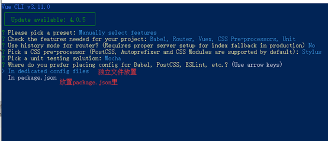

原文连接:https://www.cnblogs.com/i3yuan/p/11826457.html
前言
在上一篇中，我们通过初步的认识，简单了解 Vue 生命周期的八个阶段，以及可以应用在之后的开发中，针对不同的阶段的钩子采取不同的操作，更好的实现我们的业务代码，处理更加复杂的业务逻辑。
而在这一篇中，我们将通过配置vue的开发环境以及搭建项目，进一步的学习vue在开发中的使用方式。
对于开发vue项目之前，我们需要进行vue环境配置，大致的将需要用到的工具进行归类总结如下：（可能还有其他的工具，或者配置方式，这里仅是个人开发中常用的工具）
运行环境
——配置开发环境及初建项目1.png)
1.简单的说 Node.js 就是运行在服务端的 JavaScript。
2.Node.js 是一个基于Chrome JavaScript 运行时建立的一个平台。
3.Node.js是一个事件驱动I/O服务端JavaScript环境，基于Google的V8引擎，V8引擎执行Javascript的速度非常快，性能非常好。
Node.js在维基百科中就已经很明确的说明了，它是一个运行环境，并不是其他的什么比如软件库，简而言之，和C#所需要的编译环境一样，Node.js就是JavaScript的编译环境，它存在的目的就是为了让JavaScript可以和其他的后端语言一样能够在浏览器上运行，换种说法就是，可以让前端语言JavaScript在写完之后交给Node.js进行编译和解释，它的存在对于JavaScript有了质的飞跃，对于一个前端来说利用JavaScript就可以编译后台代码是一件多么爽飞天的事情。
安装：
通过node官网地址,直接点击下载安装。
注意：在此之前，可以有朋友会发现，在博文目录中，很早就有一篇关于node安装与vue运行的文章，大伙可以参考，进行相应的安装
——配置开发环境及初建项目2.png)
通过打开 CMD 命令窗口，输入 node -v，检查node是否安装成功
包管理器
由于新版的nodejs已经集成了npm，所以之前npm也一并安装好了。
NPM是随同NodeJS一起安装的包管理工具，能解决NodeJS代码部署上的很多问题，常见的使用场景有以下几种：
1.允许用户从NPM服务器下载别人编写的第三方包到本地使用。
2.允许用户从NPM服务器下载并安装别人编写的命令行程序到本地使用。
3.允许用户将自己编写的包或命令行程序上传到NPM服务器供别人使用。
npm简单的可以这么理解：在以前开发网站的时候，比如你想使用 jQuery，那么你点击 jQuery 网站上提供的链接就可以下载 jQuery，放到自己的网站上使用,当一个网站依赖的代码越来越多，我们发现这是一件很麻烦的事情：去 jQuery 官网下载 jQuery，去 BootStrap 官网下载 BootStrap，一个个手动的添加极其不方便，于是，有人想出了一个解决方案，用一个工具把这些代码集中到一起来管理吧！这个工具就是他用 JavaScript （运行在 Node.js 上）写的 npm，全称是 Node Package Manager。
如果咱们使用的时候，只需要再 packbag.json 中，写上这个名字，嗯！就成功的从远程 down 下来了，省去了一个个下载的环节，是不是很方便了！
打包工具
——配置开发环境及初建项目4.png)
WebPack运行流程：
初始化配置参数 -> 绑定事件钩子回调 -> 确定Entry逐一遍历 -> 使用loader编译文件 -> 输出文件
作用：
1、把依赖树按需分割、按需加载；
2、把初始加载时间控制在较低的水平；
3、每个静态资源都应该成为一个模块；
4、能把第三方库集成到项目里成为一个模块；
5、能定制模块打包器的每个部分；
6、能适用于大型项目。
WebPack可以看做是模块打包机：它做的事情是，分析你的项目结构，找到JavaScript模块以及其它的一些浏览器不能直接运行的拓展语言（Scss，TypeScript等），并将其打包为合适的格式以供浏览器使用。
安装指令：
npm install webpack -g
Vue-CLI脚手架
vue-cli是脚手架工具，其作用就是用配置好的模板迅速搭建起一个项目工程来，省去自己配置webpack配置文件的基本内容。
vue-cli 是vue.js的脚手架，用于自动生成vue.js+webpack的项目模板的，脚手架大家肯定知道，就是一个架子，用来搭建项目的整体基本骨架，有点儿什么意思呢，就比如咱们开发 .net 的时候，咱们其实可以自己一步一步的建 mvc ，但是呢，VS给我们封装了 MVC框架，我们直接就生成了整体框架，包括基础包和一些必要文件夹，vue-cli 也是这个作用。
安装：
npm install -g @vue/cli开始
安装好脚手架后，在这里用到的脚手架是3.0版本以上的。
一、 创建项目
1） 创建项目：vue create firstproject
如果没有配置保存过，则只有以下两个选项：
1.自动默认模式 ( 直接enter)：非常适合快速创建一个新项目的原型，没有带任何辅助功能的 npm包
2.手动模式（按方向键 ↓），是我们所需要的面向生产的项目，提供可选功能的 npm 插件包
这里选择手动方式：使用键盘上下键来操作，然后 Enter 选中，就会出现插件列表，也是通过上下键，然后用 空格键 来选中
在这里说明：
>( ) Babel //转码器，可以将ES6代码转为ES5代码，从而在现有环境执行。
( ) TypeScript// TypeScript是一个JavaScript（后缀.js）的超集（后缀.ts）包含并扩展了 JavaScript 的语法，需要被编译输出为 JavaScript在浏览器运行，目前较少人再用
( ) Progressive Web App (PWA) Support// 渐进式Web应用程序
( ) Router // vue-router（vue路由）
( ) Vuex // vuex（vue的状态管理模式）
( ) CSS Pre-processors // CSS 预处理器（如：less、sass）
( ) Linter / Formatter // 代码风格检查和格式化（如：ESlint）
( ) Unit Testing // 单元测试（unit tests）
( ) E2E Testing // e2e（end to end） 测试
2）选择css 预处理
主要为css解决浏览器兼容、简化CSS代码 等问题。
这里选择stylus
在这里说明：
> SCSS/SASS //Sass安装需要Ruby环境，是在服务端处理的，SCSS 是 Sass3新语法（完全兼容 CSS3且继承Sass功能）
LESS //Less最终会通过编译处理输出css到浏览器，Less 既可以在客户端上运行，也可在服务端运行 (借助 Node.js)
Stylus //Stylus主要用来给Node项目进行CSS预处理支持，Stylus功能上更为强壮，和js联系更加紧密，可创建健壮的、动态的的CSS。
3）单元测试：
在这里说明：
> Mocha + Chai //mocha灵活,只提供简单的测试结构，如果需要其他功能需要添加其他库/插件完成。必须在全局环境中安装
Jest //安装配置简单，容易上手。内置Istanbul，可以查看到测试覆盖率，相较于Mocha:配置简洁、测试代码简洁、易于和babel集成、内置丰富的expect
4）放置配置

在这里说明：
> In dedicated config files // 独立文件放置
In package.json // 放package.json里
5）是否保存本次配置
? Save this as a preset for future projects? (Y/n) // y:记录本次配置，然后需要你起个名; n：不记录本次配置
6）等待安装过程
——配置开发环境及初建项目14.png)
7）搭建完成
8）测试效果
说明
一、项目框架构造：
二、项目可视化UI界面
通过命令：vue ui
通过导入功能 导入之前创建的项目文件夹，可以查看项目插件、项目运行依赖、项目配置等
你可以在这管理（安装、删除）插件、运行并分析你的项目文件
三、 生命周期
总结
1.通过以上基本的环节搭建与项目的初步创建，我们已经可以进行相关业务逻辑的开发了。
2.Node.js是一个对于前端工作者不可或缺的工具，Node.js的应用快速发展，因此对于Node.js的学习和熟练运用，必不可少。
3.参考vue-cli官方